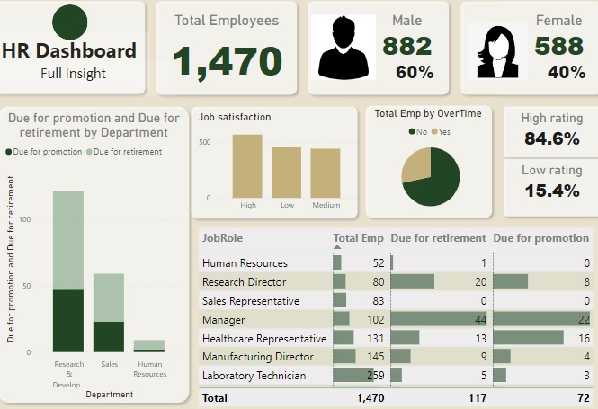

Data Exploration was done on the Ford Go-Bike Dataset which includes information about individual
rides made in a bike-sharing system by Ford covering the
greater San Francisco Bay area in 2018.
Slide decks was created showing visuals of interesting insights gotten from the exploration. This project was carried out using
pandas, numpy, matplotlib and seaborn.

Data Exploration was done on the Ford Go-Bike Dataset which includes information about individual
rides made in a bike-sharing system by Ford covering the
greater San Francisco Bay area in 2018.
Slide decks was created showing visuals of interesting insights gotten from the exploration. This project was carried out using
pandas, numpy, matplotlib and seaborn.

Data wrangling was done on the tweet archive of Twitter user @dog_rates, also known as WeRateDogs which is a Twitter account that rates people's dogs using humorous comments. Data was gathered from
different sources and in various formats, it was assessed for quality and tidiness issues and then cleaned using pandas, numpy, requests, tweepy. The wrangled data was then stored, analyzed and visualized
to get useful insights like the most liked dog,
average tweet engagement of the twitter user over of time e.t.c.

Analysis related to the turn up event of patients to their appointment across different neighborhood in Brasil was carried out. Questions raised after taking an overview of the dataset in order to give us insights as to why patients may or may not show up for their appointment were answered. This analysis was done with pandas, numpy and seaborn.

Data manipulation was done on an HR data using DAX after which data modelling was done on the different data and insights were displayed on a dashboard.